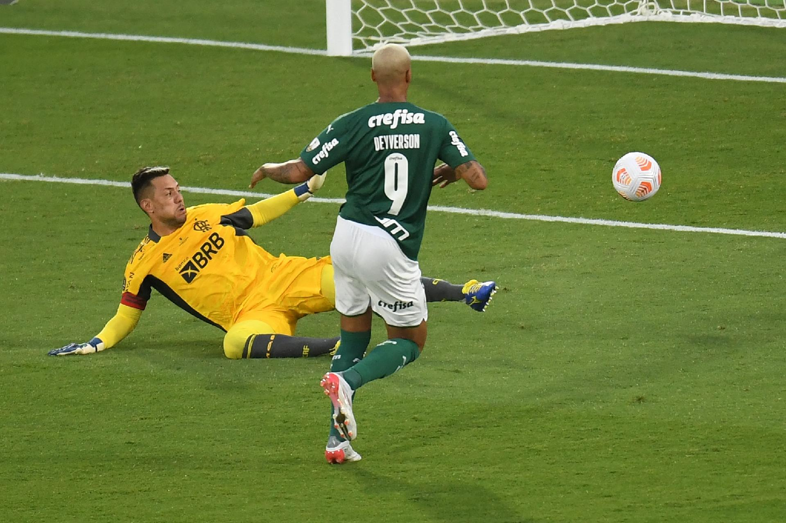

O Clube de Regatas Flamengo mais conhecido somente como Flamengo foi campeão da ultima ediçao da CONMEBOL Libertadores em cima do Club Athletico Paranaense conhecido tambem como somente Athletico Paranaense com o placar de 1x0 assim conquistando o tricampeonato dessa competição tão importante
O maior campeão brasileiro Sociedade Esportiva Palmeiras foi campeão duas vezes seguidas da competição com o importantissimo titulo conquistado em 2021 em cima de um time que continha estrelas e por isso a soberba acabou atrapalhando os planos desse time denominado urubuzada ou melhor framengo, o titulo por si so foi incrivel ainda mais contando que deyverson faria um gol nos ultimos minutos de jogo acabando com a alegria dos torcedores do time que viria a ser vice, com o placar de 2x1. 
Muitos dizem que foi uma das piores finais porem, para Palmeirenses nascidos depois de 1999 ultimo ano que ganhamos a liberta, seria um sentimento inexplicavel a sensação de ganhar uma libertadores em cima de um rival como o Santos